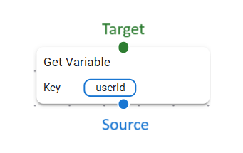

Introduction to Blocks
Blocks are the fundamental building pieces for creating configurable backend routes. They connect together like LEGO bricks to form complex API workflows through a visual, drag-and-drop interface.
🔗 Block Connections
Each block has connection points that define data flow and execution order:
| Connection Type | Color | Purpose |
|---|---|---|
| Source | 🔵 Blue | Connects to next block and optionally passes input data |
| Target | 🟢 Green | Accepts connection and input data from previous block |
| Success | 🟢 Green | Executes on successful block completion |
| Error | 🔴 Red | Executes when block encounters an error |

📦 Block Categories
Blocks are organized into logical categories based on their functionality:
🔰 Core Blocks (Required)
These blocks are essential for every API route:
- Entrypoint: Entry point for all requests
- Response: Final output generation
🔀 Control Flow Blocks
Manage execution flow and decision making:
- If: Conditional branching based on conditions
- For Loop: Traditional for loop with start/end/step
- ForEach Loop: Iterate over arrays or collections
🌐 HTTP Blocks
Handle HTTP request/response operations:
- Get Header: Extract request headers
- Set Header: Set response headers
- Get Cookie: Extract request cookies
- Set Cookie: Set response cookies
- Get Param: Extract route/query parameters
- Get Request Body: Parse request body
📝 Data Processing Blocks
Transform and manipulate data:
- JavaScript Runner: Execute custom JavaScript code
- Transformer: Transform objects using field mapping
- Array Operations: Manipulate arrays (push, pop, slice, etc.)
💾 Variable Management Blocks
Store and retrieve data within request context:
- Set Variable: Store data in request context
- Get Variable: Retrieve data from request context
📊 Logging & Debugging Blocks
Monitor and debug API execution:
- Console Log: Output to console for debugging
🔌 Extension Blocks
Specialized functionality:
- Interceptor: Intercept and modify request/response flow
🏗️ How Blocks Work
Execution Flow
- Entrypoint Block receives the initial request
- Data flows through connected blocks in sequence
- Each block processes input and produces output
- Response Block generates the final HTTP response
Data Flow
- Blocks receive input from their target connection
- Processing occurs based on block configuration
- Output is sent to the next block via source connection
- Variables can be set/retrieved across the entire flow
Error Handling
- Blocks can have success and error paths
- Failed blocks can continue execution or stop the flow
- Error information is propagated through the error connection
🎨 Creating Custom Blocks
The Configurable Backend Engine supports custom block development:
import { BaseBlock, BlockOutput } from "../baseBlock";
export class CustomBlock extends BaseBlock {
async executeAsync(params?: any): Promise<BlockOutput> {
// Custom logic here
return {
successful: true,
output: processedData,
next: this.next,
continueIfFail: true
};
}
}
📋 Block Configuration
Each block can be configured through:
- Input Parameters: Define block behavior
- Connection Settings: Control data flow
- Validation Rules: Ensure data integrity
- Error Handling: Define failure responses
🔧 Best Practices
Design Principles
- Keep blocks focused on single responsibilities
- Use meaningful names and descriptions
- Provide clear input/output documentation
- Handle errors gracefully
Performance Considerations
- Avoid heavy computations in frequently used blocks
- Use caching for expensive operations
- Minimize database queries within blocks
- Consider async operations for I/O tasks
Security Guidelines
- Validate all input parameters
- Sanitize data before processing
- Use parameterized queries for database operations
- Implement proper error handling without exposing sensitive information
📚 Block Reference
For detailed information about each block, see the individual block documentation linked above. Each page includes:
- Block purpose and use cases
- Configuration options
- Input/output specifications
- Example usage
- Error handling